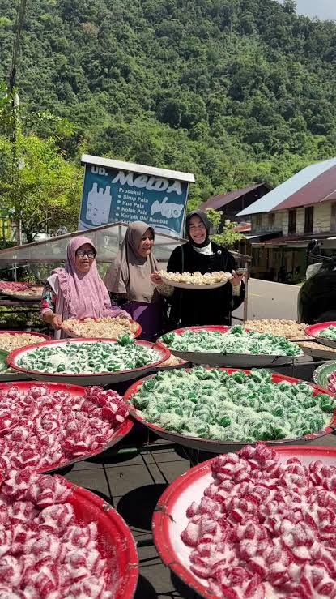
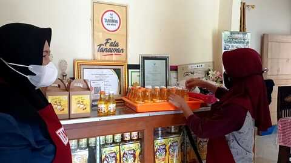

Pala Raos Bogor berawal dari kebun pala milik keluarga di kawasan Cisarua, Bogor, yang sudah ditanami sejak puluhan tahun lalu. Daripada hanya menjual buah pala mentah, kami mulai mengolahnya sendiri menjadi manisan dan sirup sejak tahun 2019.
Kini Pala Raos Bogor melayani penjualan oleh-oleh khas Bogor untuk wisatawan yang berkunjung ke kawasan Puncak, serta pesanan online ke berbagai kota. Semua produk masih diolah dengan resep rumahan dan bahan alami tanpa pengawet.
Menjadikan olahan pala sebagai oleh-oleh khas Bogor yang dikenal luas, sekaligus melestarikan hasil kebun pala lokal.
Mengolah buah pala segar menjadi produk berkualitas tanpa pengawet, memberdayakan petani pala sekitar, dan menjaga kepuasan pelanggan.
Setiap produk Pala Raos Bogor dikerjakan dengan tangan oleh ibu-ibu sekitar kebun, mulai dari mengupas, merendam, hingga mengemas. Proses yang masih serba homemade inilah yang membuat rasa olahan pala kami tetap terasa seperti buatan rumah sendiri.

Manisan pala dijemur dan dikemas langsung oleh ibu-ibu di sekitar kebun.

Sirup pala dituang dan dikemas satu per satu secara manual di rumah produksi.